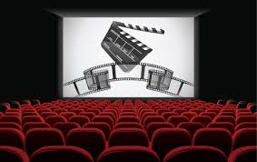
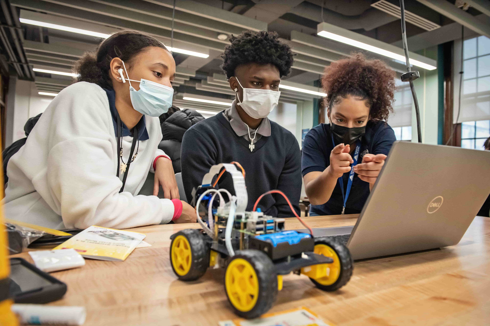
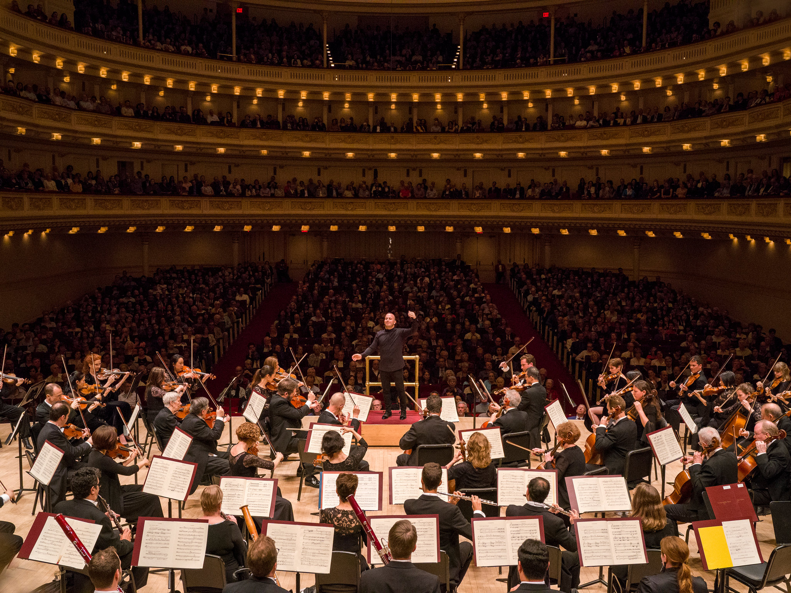

Graduation Party
بكل فخر واعتزاز، تتشرف إدارة [اسم الجامعة] بدعوتكم لحضور حفل تخرج كوكبة من طلابها وطالباتها، الذين أتموا مسيرتهم الأكاديمية بنجاح واستحقاق. يسرنا أن نشارككم لحظات التتويج والحصاد لجيلٍ واعد يتأهب للمساهمة في بناء الوطن.
تبدأ مراسم هذا اليوم الاستثنائي بنغماتٍ تلامس القلوب، معلنةً انطلاق مسيرة الخريجين؛ تلك الخطوات التي لا تشبه غيرها، فهي تحمل ثقل السنين وجمال الأحلام التي أصبحت واقعاً، حيث يتهادى الخريجون بعباءاتهم وكأنهم يزفون إلى مستقبلهم، تحت نظرات الأمهات والآباء التي تمزج بين دمعة الفرح وابتسامة الفخر، في مشهدٍ يختصر حكاية كفاحٍ طويلة.
مع استقرار الجميع، تفتتح الكلمات الرسمية القلوب قبل العقول، لتنساب عبارات الشكر والامتنان، وتأتي "كلمة الخريجين" كبوحٍ صادق يستحضر ليالي السهر، ورفقة الدرب، واللحظات التي تعثروا فيها ثم نهضوا أقوى، ليوجهوا تحية إجلالٍ لأرواحٍ لم تبخل عليهم بالدعاء والدعم. ثم تبدأ اللحظة التي انتظرها الجميع، لحظة الصعود إلى المنصة؛ حيث لا تُسلَّم الشهادة باليد فحسب، بل تُسلم بالقلب، وسط تصفيقٍ يهزّ أرجاء القاعة وكأنه يعلن انتصار الإرادة.
وفي لحظةٍ يمتزج فيها الوداع بلهفة البدايات، يجتمع الرفاق تحت سماءٍ واحدة ليقذفوا قبعاتهم عالياً، وكأنهم يطلقون أحلامهم لتعانق الغيوم، في مشهدٍ سينمائي تتبعه أحضان اللقاء الأخير وصورٌ تذكارية ستظل محفورة في الذاكرة. وينتهي الحفل بهدوءٍ جميل في ساحات الجامعة، حيث يتبادل الجميع التهاني والوعود بالبقاء على العهد، وتتعالى الضحكات الممزوجة بغصة الفراق، في ليلةٍ لا تُنسى من ليالي العمر.
Information:
web divelopment
هل ترغب في تحويل أفكارك إلى واقع رقمي ملموس؟ انضم إلينا في ورشة عمل مكثفة وتفاعلية تأخذك من الصفر إلى بناء أول موقع إلكتروني احترافي لك. سنغوص معاً في عالم البرمجة لنكتشف كيف تُبنى المواقع التي نستخدمها يومياً.
سيركز البرنامج على الجوانب التقنية والوظيفية لتطوير الويب:
أساسيات الواجهة الأمامية (Front-End): إتقان لغات الهيكلة والتنسيق HTML5 و CSS3.
إضافة التفاعل: مقدمة في لغة JavaScript لجعل موقعك حيوياً.
مقدمة في الواجهة الخلفية (Back-End): فهم كيفية عمل الخوادم وقواعد البيانات.
التصميم المتجاوب: كيفية جعل الموقع يعمل ببراعة على جميع الشاشات (الهواتف، الأجهزة اللوحية، والحواسيب).
لمبتدئون الراغبون في دخول مجال البرمجة من الصفر.
الطلاب والمهتمون بتغيير مسارهم المهني نحو التقنية.
أصحاب المشاريع الراغبون في فهم كيفية إدارة وتطوير مواقعهم.
Information:

Book Lovers
ي قلب الجامعة، وبين آلاف الكتب التي تنتظر من يبعث فيها الحياة، تدعوكم إدارة المكتبة المركزية لقضاء وقتٍ استثنائي بعيداً عن صخب المحاضرات، لنغوص معاً في عوالم الأدب والفكر، ونعيد اكتشاف سحر القراءة في أجواءٍ تملؤها السكينة والإلهام.
تبدأ الفعالية في زاوية هادئة تم تجهيزها بإضاءة خافتة ومقاعد مريحة، حيث يُفتتح اللقاء بجلسة "مذاقات أدبية"؛ وهي فقرة يشارك فيها الحضور باقتباسات ملهمة أو فقرات قصيرة من كتبهم المفضلة، تليها جلسة "حوار مع كتاب"، حيث نستضيف أحد الأكاديميّن أو الطلاب المبدعين ليحدثنا عن كتابٍ غيّر مجرى تفكيره. ثم ننتقل إلى وقت "القراءة الصامتة"، حيث يسود الصمت المطبق لمدة عشرين دقيقة، تمنح الجميع فرصة الغوص في صفحات كتاب مختار وسط رائحة الورق والقهوة. وتُختتم الفعالية بفقرة "تبادل العقول"، وهي مبادرة تتيح للحضور تبادل كتبهم الخاصة مع بعضهم البعض، لتنتقل المعرفة من قارئ إلى آخر، مع توزيع هدايا تذكارية عبارة عن "فاصل كتاب" (Bookmark) يحمل شعار الجامعة.
الدعوة عامة لجميع الطلاب والأساتذة ومحبي القراءة. يمكنك إحضار كتابك المفضل معك، أو اختيار واحد من قائمة "ترشيحات الشهر" في المكتبة.
Information:
Chess tournament
في عالمٍ لا مجال فيه للصدفة، حيث تخطط الخطوة وتنتظر العواقب، تدعوكم الجامعة للمشاركة في "بطولة الشطرنج السنوية". إنها ليست مجرد لعبة، بل هي اختبار للذكاء، الصبر، والقدرة على قراءة أفكار الخصم تحت ضغط الوقت.
تنطلق البطولة وسط أجواء من التركيز التام، حيث تصطف الرقع في صمتٍ لا يقطعه إلا صوت ضغط ساعات الشطرنج وحركة القطع الخشبية. تبدأ الأدوار التمهيدية بنظام المجموعات، حيث يتواجه اللاعبون في معارك ذهنية قصيرة ومكثفة تهدف لتصفية الأقوى. ومع تقدم الوقت، يزداد التوتر في الأدوار الإقصائية، حيث يتم عرض مباريات الطاولات الأولى عبر شاشات كبرى ليتمكن الجمهور من تحليل النقلات ومتابعة استراتيجيات المحترفين.
صل الإثارة لـ المباراة النهائية التي تُقام على "رقعة العمالقة"، وسط صمتٍ مطبق يترقب فيه الجميع حركة "الملك" الأخيرة. وتُختتم الفعالية بمراسم تتويج الفائزين بلقب "أستاذ الجامعة"، وتوزيع الكؤوس والميداليات على المراكز الثلاثة الأولى، وسط تكريم خاص لأكثر اللاعبين ذكاءً في تنفيذ التكتيكات.
لمركز الأول: كأس البطولة + مكافأة مالية + لقب بطل الجامعة.
لمركز الثاني والثالث: ميداليات تذكارية وهدايا عينية قيمة.
للمشاركين: شهادات مشاركة في البطولة لتعزيز الملف الطلابي
Information:
Theater
عندما تُضاء الأنوار ويُرفع الستار، يبدأ السحر! تتشرف الجامعة بدعوتكم لحضور العرض المسرحي السنوي الذي يقدمه نخبة من طلابنا المبدعين. انضموا إلينا في ليلة تمتزج فيها الدراما بالكوميديا، لنشهد معاً كيف تتحول خشبة المسرح إلى مرآة تعكس قضايا المجتمع وأحلام الشباب.
تبدأ الحكاية من مشهدٍ مهيب تحت إضاءة خافتة، حيث يسود الصمت وتتجه الأنظار نحو أبطالنا الذين يجسدون شخصيات تعيش صراعاً بين الواقع والخيال. المسرحية لا تكتفي بتقديم القصة من خلال الحوار فحسب، بل تتداخل فيها الفنون الاستعراضية والمؤثرات الصوتية والضوئية لتخلق تجربة بصرية وحسية متكاملة.
تصاعد الصراع الدرامي في الفصل الثاني، حيث تظهر مواهب الطلاب في الأداء التعبيري الذي يلامس مشاعر الحضور، متنقلاً بهم من لحظات الضحك العفوي إلى لحظات التأمل العميق. ومع وصول المسرحية إلى مشهدها الختامي، تجتمع الشخصيات كلها فوق الخشبة لتوجيه الرسالة الأسمى للعمل، وسط تصفيق الجمهور الذي يشجع هؤلاء الفنانين الصاعدين الذين بذلوا شهوراً من التدريب في كواليس المسرح الجامعي.
إبداع طلابي خالص: النص، الإخراج، والديكور بأيدي طلاب الجامعة الموهوبين
تقنيات حديثة: استخدام شاشات تفاعلية وإضاءة سينمائية لأول مرة.
نقاش ما بعد العرض: جلسة قصيرة تجمع الممثلين والمخرج بالجمهور لمناقشة كواليس العمل وأهدافه.
Information:

Movies
لأن السينما ليست مجرد ترفيه، بل هي لغة عالمية تختصر المسافات بين الشعوب، تدعوكم الجامعة لحضور عرض فيلم ثقافي، لنبحر معاً في رحلة بصرية تستكشف أعماق النفس البشرية وتاريخ الحضارات، ونفتح آفاقاً جديدة للنقاش والتحليل.
تبدأ الأمسية في أجواء سينمائية هادئة، حيث يتم استقبال الحضور بمقدمة قصيرة تستعرض سياق الفيلم، وأهميته الثقافية، والجوائز التي حصدها. ومع انخفاض الأضواء، يبدأ العرض السينمائي الذي تم اختياره بعناية ليحاكي قضايا فكرية أو اجتماعية تلامس واقعنا، مستخدماً تقنيات عرض وصوت عالية الجودة لضمان تجربة غامرة.
بعد نهاية الفيلم، لا تنتهي الفعالية عند تتر الختام؛ بل تبدأ فقرة "صالون النقاش"، حيث يجتمع الطلاب والأساتذة في جلسة حوارية مفتوحة لتحليل الرسائل المبطنة في العمل، ومناقشة الرؤية الإخراجية، ومدى تقاطع أحداث الفيلم مع الواقع الثقافي. تُختتم الأمسية بتوزيع كتيبات صغيرة (Review) تحتوي على تحليل نقدي للفيلم وقائمة بترشيحات لأفلام مشابهة.
يئة نقدية: فرصة لتطوير مهارات التحليل السينمائي والنقاش الهادف.
ركن الفشار والقهوة: ضيافة كلاسيكية تضفي طابعاً سينمائياً ممتعاً على الأمسية.
حضور أكاديمي: استضافة أحد المتخصصين في النقد السينمائي أو العلوم الاجتماعية لإثراء النقاش
Information:

Robotics
تُعد ورشة عمل "هندسة الأنظمة الروبوتية" رحلة علمية متكاملة تأخذ طالب الجامعة من سياق النظريات الأكاديمية إلى فضاء التطبيق الهندسي والابتكار التقني. تبدأ هذه الرحلة بالانغماس في عالم الأنظمة المدمجة، حيث يتعامل الطالب مع المتحكمات الدقيقة المتقدمة ليفهم معماريتها وكيفية إدارة الطاقة وتصميم الدوائر الكهربائية بكفاءة عالية، مما يضع حجر الأساس لبناء دماغ الروبوت الإلكتروني.
ولا يتوقف الأمر عند الجانب الكهربائي، بل يمتد ليشمل دراسة الميكانيكا الحيوية والنمذجة الرياضية، حيث يتعلم المشاركون كيفية تحليل حركة الأذرع الروبوتية وتطبيق قوانين الكينماتيكا والديناميكا باستخدام برامج التصميم الهندسي المتطورة لمحاكاة الواقع قبل البدء في مرحلة التصنيع الفعلي. ومع انتقال الورشة إلى الجانب البرمجي، يجد الطالب نفسه أمام تحديات برمجية شيقة تشمل استخدام نظام تشغيل الروبوتات (ROS) وبرمجة خوارزميات الملاحة الذكية ورسم الخرائط، مما يمنح الروبوت القدرة على اتخاذ قرارات مستقلة في بيئات متغيرة.
تصل الورشة إلى ذروتها عند دمج تقنيات الرؤية الحاسوبية ومعالجة الإشارات القادمة من الحساسات المتطورة، مما يمكّن الروبوت من إدراك محيطه والتعرف على الأجسام بدقة. وفي ختام هذه التجربة، لا يخرج الطالب بنموذج أولي لآلة ذكية فحسب، بل يكتسب عقلية مهنية قادرة على العمل ضمن فرق متعددة التخصصات، ويطور مهارات تحليلية تجعل منه مهندساً مستعداً لمتطلبات الثورة الصناعية الرابعة وسوق العمل العالمي، محولاً الأفكار البحثية إلى مشاريع واقعية تخدم المستقبل.
Information:

Classic music
تتحول أروقة الجامعة من فضاءات للمحاضرات والبحث إلى منصة فنية نابضة بالحياة مع انطلاق "الأمسية الموسيقية السنوية"، وهي الفعالية التي ينتظرها الطلاب للاحتفال بالإبداع والموهبة. تبدأ الأمسية في مسرح الجامعة الرئيسي الذي يتزين بإضاءات فنية خاصة، حيث يفتتح الحفل بعزف أوركسترالي يقدمه فريق كورال الجامعة، يمزج فيه بين المقطوعات الكلاسيكية الخالدة والألحان التراثية التي تلامس الوجدان. ومع تصاعد وتيرة العرض، تتاح الفرصة للمواهب الشابة لتقديم فقرات فردية وعروض لفرق "الروك" و"الجاز" الطلابية التي تضفي جواً من الحماس والطاقة في أنحاء القاعة.
ا يقتصر الحفل على الموسيقى فحسب، بل يمثل تجربة اجتماعية متكاملة، حيث تتخلل الفقرات كلمات ملهمة عن دور الفن في صقل الشخصية الجامعية، وتُختتم الليلة بفقرة غنائية جماعية يشارك فيها الحضور، مما يعزز روح الوحدة والانتماء للحرم الجامعي. تُقام على هامش الحفل منصات لبيع المأكولات الخفيفة والمشروبات، مع توفير مساحات للتصوير وتوثيق هذه اللحظات التي تبقى محفورة في ذاكرة الطلاب كواحدة من أجمل محطات حياتهم الجامعية، بعيداً عن ضغوط الاختبارات والكتب.
Information:

Basketball
تستعد أرض ملعب الجامعة لاستقبال الحدث الرياضي الأبرز هذا الموسم، حيث تنطلق "بطولة كليات الجامعة لكرة السلة" في أجواء تملؤها الحماسة والندية. تجمع هذه البطولة نخبة من لاعبي الجامعة الذين سيقدمون استعراضاً مهارياً رفيعاً يتسم بالسرعة والدقة والروح الرياضية العالية، سعياً لحصد اللقب وإثبات جدارتهم فوق أرضية الميدان.
ن حضوركم في المدرجات ليس مجرد مشاهدة، بل هو الوقود الذي يشعل حماس لاعبي فريقنا ويدفعهم لتقديم أقصى ما لديهم من جهد، فصيحاتكم وتشجيعكم هي اللاعب رقم واحد الذي يصنع الفارق في اللحظات الحاسمة. ندعو جميع الطلاب والمنسوبين للالتفاف حول فريق الجامعة، ورفع الرايات، ومشاركتنا هذا الكرنفال الرياضي الكبير، لنثبت للجميع أن روحنا الجامعية لا تقهر، وأن دعمنا لفريقنا هو سر انتصاره.